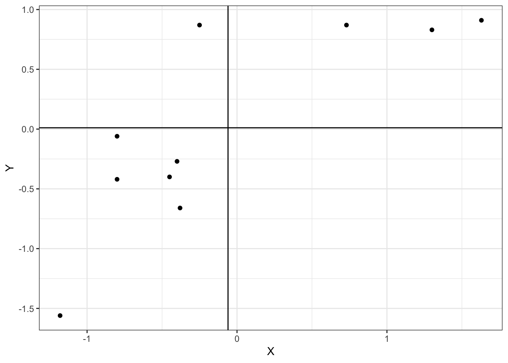

- 回帰係数の算出方法を理解する
- データに対して回帰直線を当てはめる
2つの変量\((x,y)\)に関する\(n\)組のペアデータ \((x_1,y_1),(x_2,y_2),\dots,(x_n,y_n)\)
相関係数\((r)\)は,
\[ \begin{align} r=\frac{S_{xy}}{S_xS_y} \end{align} \]
分母の\(Sx\)は\(x\)の標準偏差,
\[ \begin{align} s=\sqrt\frac{1}{n}\sum_{i=1}^n (x_i-\bar{x})^2 \end{align} \]
分母の\(Sy\)は\(y\)の標準偏差,
\[ \begin{align} s=\sqrt\frac{1}{n}\sum_{i=1}^n (y_i-\bar{y})^2 \end{align} \]
分子は\(S_{xy}\)は\(x\)と\(y\)の共分散 (<-NEW!!)
\[ \begin{align} S_{xy}=\frac{1}{n}\sum_{i=1}^n (x_i-\bar{x})(y_i-\bar{y}) \end{align} \]
相関係数は, 2変数間の共分散を,各変数の標準偏差の積で割ることで求まる
相関係数\((r)\)は,
\[ \begin{align} r=\frac{S_{xy}}{S_xS_y} \end{align} \]
分母の\(Sx\)は\(x\)の標準偏差, 級代表値に基づくと
\[ \begin{align} S_x=\sqrt\frac{1}{n}\sum_{i=1}^n (x_i^*-\bar{x})^2 f_{i} \end{align} \]
\(x_i^*\)は\(x\)の級代表値, \(f_{i}\)は各級の度数
分母の\(Sy\)は\(y\)の標準偏差, 級代表値に基づくと
\[ \begin{align} S_y=\sqrt\frac{1}{n}\sum_{i=1}^n (y_i^*-\bar{y})^2 f_{j} \end{align} \]
\(y_i^*\)は\(y\)の級代表値, \(f_{j}\)は各級の度数
分子は\(S_{xy}\)は\(x\)と\(y\)の共分散 級代表値に基づくと,
\[ \begin{align} S_{xy}=\frac{1}{n}\sum_{i=1}^n (x_i^*-\bar{x})(y_i^*-\bar{y})f_{ij} \end{align} \]
\(f_{ij}\)は\(x\)の\(i\)番目の級と\(y\)の\(j\)番目の級に属するデータの度数
\[ \begin{align} -1 \leq r \leq 1 \end{align} \]
\(0 < r \leq 1\):
正の相関(Xが大きくなるとYも大きくなる)
\(-1 \leq r < 0\):負の相関(Xが大きくなるとYは小さくなる)
\(r = 1\):正の完全相関\(r =-1\):負の完全相関$r = 0:無相関(XとYに関連がない)
例) 身長と体重に正の相関がある. 身長が増加した時体重が増加するとは限らない、また体重が増加したとき身長も増加するとは限らない
相関係数の分子(共分散),
\[ \begin{align} S_{xy}=\frac{1}{n}\sum_{i=1}^n (x_i-\bar{x})(y_i-\bar{y}) \end{align} \]
\[ \begin{align} S_{xy}=(x_1-\bar{x})(y_1-\bar{y})+(x_2-\bar{x})(y_2-\bar{y})+\dots+(x_n-\bar{x})(y_n-\bar{y}) \end{align} \]

第I象限にあるデータ: \((x_i-\bar{x})(y_i-\bar{y})\)は正
第III象限にあるデータ: \((x_i-\bar{x})(y_i-\bar{y})\)は正
第II象限にあるデータ: \((x_i-\bar{x})(y_i-\bar{y})\)は負
第IV象限にあるデータ: \((x_i-\bar{x})(y_i-\bar{y})\)は負
正の相関の場合は, 第I象限と第III象限に属するデータが多い
負の相関の場合は, 第II象限と第IV象限に属するデータが多い
#演習問題1.1 ##1.1 > 4, 8,10,12,16の平均値\(\bar{x}\)分散
student <- 1:20
english <- c(80, 82, 88, 45, 44, 66, 42, 88, 80, 75, 76, 74, 63, 92, 25, 28,
54, 80, 31, 67)
math <- c(52, 75, 92, 41, 54, 61, 26, 64, 74, 67, 80, 91, 84, 83, 26, 47, 56,
29, 35, 83)
dat <- data.frame(生徒番号 = student, 英語 = english, 数学 = math)
library(DT)
datatable(dat, option = list(scrollY = TRUE))相関係数の算出に必要な情報
各変数の平均, 標準偏差
[1] 64[1] 61[1] 432.9[1] 451.5[1] 20.80625[1] 21.24853[1] 297[1] 0.6717904Copyright © 2018 竹林由武. All rights reserved.